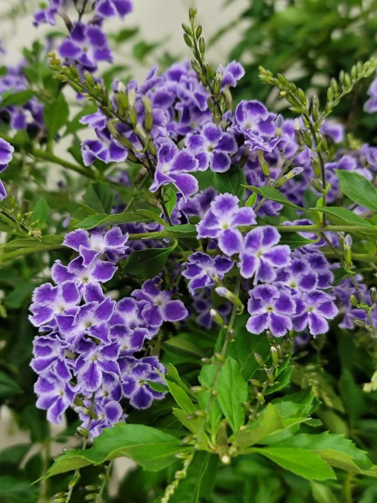

El duranta es una especie muy atractiva y valorada en jardinería por su abundante floración. De porte arbustivo, el duranta es muy utilizado para formar setos, aunque también es apta para cultivar en macetas e, incluso, en bonsái. La floración se da durante los períodos calurosos del año y suele ser muy abundante, además de aromática.
Tiene un aroma sauve y agradable, especialmente cuando florece en abundancia. Atrae abejas, mariposas y colibríes, lo que la convierte en una excelente opción para jardines que buscan atraer vida silvestre.
Puede crecer como:
Se recomienda de 6 horas o másde sol directo al día
Tolera clima cálido y semiseco
2 o 3 veces por semana, clima cálido.
1 vez por semana en clima fresco.
No encharcar la tierra, porque sus raíces pueden pudrirse.
Prefiere tierra fértil, con buen drenaje y suelo ligeramente humedo.
Se recomiendoa podar para controlar el tamaño, dependiendo de tus gustos, estimular la floracion y darle forma ornamental.
La duranta es muy utilizada en parques, jardines urbanos, camellones y cercos decorativos porque florece muchísimo, atrae polinizadores, es resistente al calor y se ve super vistosa todo el año